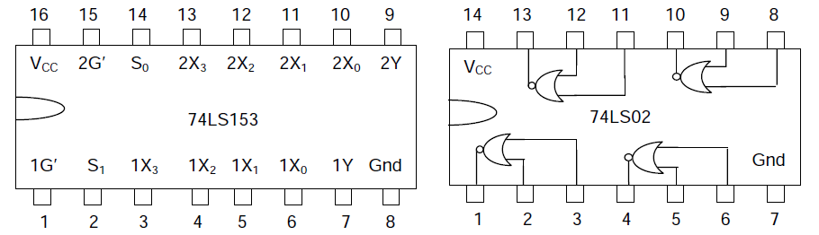

This module explains how to build a 7 segment decoder.

BCD to 7-segment Decoder
A BCD to 7-segment Decoder generates 7 outputs from a BCD (4-bit) input for driving a 7-segment LED display device to display BCD digits. A 7-segment display consists of seven segments designated as a, b, c, d, e, f and g in a clockwise sequence. An optional DP decimal point (an "eighth segment") is used for the display of non-integer numbers. In a 7-segment LED display, either all the anodes or all the cathodes of the LEDs in the seven segments are tied together and brought out at a single pin, and the device is accordingly called either a common-anode or a common-cathode display. In this experiment, we will use a common-anode display, and so the Decoder outputs are applied through resistors placed in series with the cathode of each segment. The objective of this experiment is to design, assemble and test a BCD to 7-segment Decoder generating these seven outputs. Note that each segment is lighted when the corresponding decoder output, also denoted by a, b, c, d, e, f and g, is LOW.
|
 |
 |
The natural choice for a design involving 4 input variables is a 4-input multiplexer, and the best choice for the Select inputs for BCD input is BA, as that would give us the maximum benefit of don’t care combinations.

There are only five distinct values that these 28 data inputs have, and these are 0, 1, C, C’ and D’•C’ = (D + C)’. Thus a 2-input NOR gate and an inverter are all that is needed to generate all the required data inputs. Moreover, one realises that as 4-input multiplexers come two in a chip, one multiplexer IC would only be half utilised if all the 7 outputs are generated with multiplexers, and hence one could save on the chip count if one of the segment inputs could be realised using 2-input NOR gates, already being used for generating D’•C’. Segments b, c and e have the simplest expressions and are thus possible candidates for this option. Find out which of these three would be the best choice for realisation using 2-input NOR gates. We will thus be using three dual 4-input multiplexers (74LS153), and one quad 2-input NOR gate (74LS02).
Inputs and outputs
| I0 | I1 | I2 | I3 | Output |
| 0 | 0 | 0 | 0 | 0 |
| 0 | 0 | 0 | 1 | 1 |
| 0 | 0 | 1 | 0 | 2 |
| 0 | 0 | 1 | 1 | 3 |
| 0 | 1 | 0 | 0 | 4 |
| 0 | 1 | 0 | 1 | 5 |
| 0 | 1 | 1 | 0 | 6 |
| 0 | 1 | 1 | 1 | 7 |
| 1 | 0 | 0 | 0 | 8 |
| 1 | 0 | 0 | 1 | 9 |
Source: Wikipedia

- The objective of this experiment is to make decoder.
- First of all make decoder according to the theory page.And analyze its output how it correspond to different digit.


Digital Logic Design
This lab allows you to design and simulate any digital
combinational or sequential circuit. Following instruction help you
build the circuit. A Java-based basic tool and simulation enigne is
at the hear of this laboratory. You can create many circuits and
test them with fixed or time-varying input signals. You can also see
the outputs as values or time-varying waveforms.
The tool consist of mainly four pannels: Left Pannel, Mid Pannel, Right Pannel, and Top Pannel.
Left Pannel
Gate Buttons: These buttons are used to draw basic gates like AND, OR, XOR, NOT, NOR, NAND,XNOR andCONNECTOR . Click on these by drop down menu then select the proper number of inputs . Once You have finalized the gate & number of inputs then click on SELECT Button and place the gate where you want to in the mid pannel drawing area.
Probe: Output at each terminal is shown by default against it. Iif you want explicitly to watch another node, you can probe it using a feature from the left panel.
None: It is used to get default cursor option back, so that you can do basic operation like drag and drop.
Delete Element: This is used for explicitly deleting an element. Click on the element after selecting delete mode.
Connect/Disconnect: This mode allows establishing and removing connection between various points. Connection can be established only from output to input. You have to first click to the output node then to the input node (consisting of red square box). For disconnection, you can start by clicking either the input or the output node.
Naming: This is used to give a user-selected name to an input or output node. Click on the node and give the name into the input box that pops up.
Output: This is used to define an output node. See the explanation of import button to learn why this may be necessary.
Time Pulse: Enter the time pulse pattern separated by commas. For example: 0,10,10,10,10 defines a clock that is 0 for 10 units and 1 for 10 units. Press enter or click on the new timepulse to create it. It will be available as input in list box.
Binary One And Zero: These can be used to give fixed values to terminals
Top Pannel
Clear: Use this to clear every element on the circuit. Caution: Everything on the design panel will be lost; there is no undo!
Save: Use this to save the designed circuit as a file on your machine. This file can be loaded and imported later.
Load: A circuit saved on your machine can be loaded onto the mid panel to as a fresh circuit that can be further edited.
Import: This is an important feature that lets you construct building blocks. A circuit from your machine is imported to the mid panel, but will appear as a block or a box with input and output terminals. The name of the element is that of the imported file. The named terminals will have their saved names. The input and output nodes will come in the same order from top to bottom as created. This allows one to build on circuits saved as blocks. For instance, an full adder you design using gates can be saved as a block and used in later circuits as an adder-block.
Simulate: Use this to simulate or compute the intermediate and final outputs of the whole circuit, if all the terminal inputs are present. It also computes the gate delays, which is diplayed when the mouse hovers over each element. The default gate delay is -1. Simulation can fail or give ambiguous result if the circuit does not stablizes with time. This can happen due to improper feedback circuitry. The underlying engine is not a full fledged circuit simulator and can get stuck at constructions involving certain feedback.
Mid Pannel: This is the drawing area used to build the circuit. You can move the elements by clicking and dragging.
Right Pannel: This area shows the time-varying inputs, outputs, and probed points. Name or index associated with points are displayed. Indexes are given top to bottom.
Note: Sample circuit for each experiment will be given as default. You can try them with the help of load_it or impor_itt button.It is advised try to built circuit of your own before trying the default circuit.

1) Design the BCD to seven segment display decoder as given in the theory section. Save this circuit which takes four inputs D,C,B, A and produces 7 outputs a,b,c,d,e,f,g.
2) The Seven segment display designed above can display digits from 0 to 9. Now design a circuit which can display hexadecimal numbers 0-9 and A-F. Start by making K-maps for a,b,c,d,e,f,g and use seven 4:1 / 8:1 multiplexers, each generating one output.
Save this circuit with appropriate name.
3) A 4-bit ripple adder has been made in Experiment 1. It takes two 4-bit numbers A3A2A1A0 and B3B2B1B0 as inputs and generates their sum S3S2S1S0 and final carry C-out.
Save the 4-bit ripple adder by marking appropriate inputs and outputs.
Import the seven segment hexadecimal display designed in question 2.
Import the 4 bit ripple adder.
Connect the outputs S3S2S1S0 of ripple adder to the inputs DCBA of 7 segment hexadecimal display. Give two 4-bit binary numbers as inputs to ripple adder and see if their sum is being displayed by the seven segment hexadecimal display.

- With The help of Theory Page , try to build the decoder.
- If You are unable to make it , load or export the circuit directly and use it
- Analyze the values of a,b,c,d,e,f,g corresponding to the image given in theory page to see how different number are formed

- Decoders - Wikipedia
- Seven segment displays - Wikipedia
- Chapter 5 : Combinational Logic with MSI and LSI, "Digital Logic and Computer Design" - M. Morris Mano